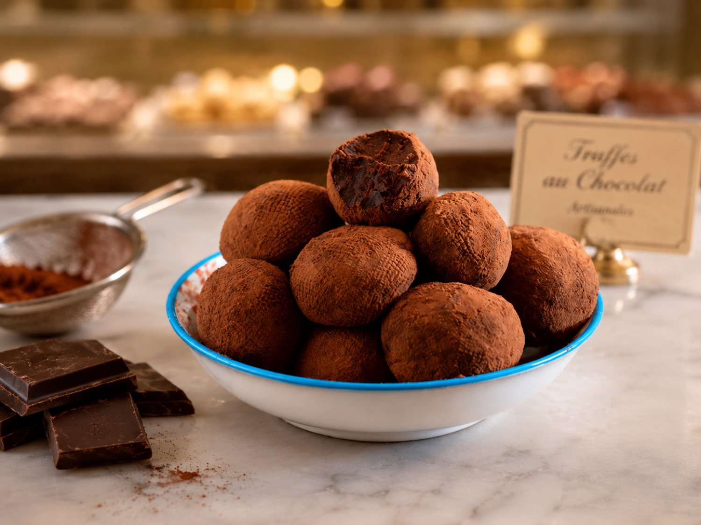

Chocolatería
Las Claves de la Pastelería · Clase de Chocolatería básica
Trufas con alcohol
Trufas de ganache de chocolate negro y de leche con brandy, boleadas y bañadas en chocolate templado y cacao. Rinde 30 unidades.
EscuelaEcoleCursoLas Claves de la PasteleríaChef instructoraFernanda PérezDía de realización14 de julio de 2026
Página 14 del PDF escaneado (página impresa 34).
a
Trufas con alcohol (30 unidades)
Página 14 del PDF escaneado (página impresa 34).
Ingredientes
| Chocolate negro 64 % | 200 g |
| Chocolate leche 40 % | 90 g |
| Crema | 200 g |
| Brandy | 10 g |
| Mantequilla | 30 g |
| Chocolate leche 40 % (para cubrir) | 200 g |
Procedimiento
- Fundir el chocolate a 40 °C.
- Calentar la crema hasta 40 °C o hasta que aparezcan las primeras burbujas.
- Añadir, en 3 veces, la crema al chocolate e ir emulsionando con ayuda del mezquino.
- Pomar la mantequilla.
- Añadirla a la mezcla con ayuda de un mezquino y la batidora de inmersión.
- Añadir el alcohol y terminar de emulsionar con la batidora de inmersión.
- Dejar enfriar la ganache en una bandeja, con film a contacto, hasta un mínimo de 18 °C – 15 °C.
- Poner en una manga y, con boquilla lisa, dividir la ganache en montoncitos iguales sobre una bandeja fría con silpat.
- Enfriar nuevamente hasta que tenga buena textura.
- Templar el chocolate de leche.
- Sacar bolitas de ganache, con guantes formarlas como bolita lisa y pasar por chocolate previamente templado y, antes de que cristalice, poner en cacao en polvo para cubrir correctamente.
Notas y anotaciones de clase
- La segunda porción de chocolate de leche (200 g) es «para cubrir».
- Junto al paso 1: «no pasarse de 45 °C».
- Paso 2, aclaración confirmada: detener al alcanzar 40 °C o al aparecer las primeras burbujas.